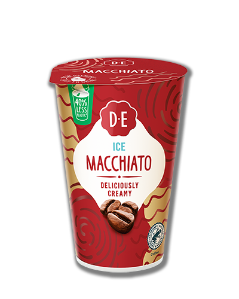
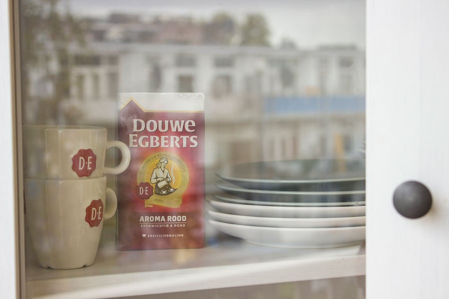

-
Meld je aan voor Burendag 2025!
De aanmeldingen voor Burendag zijn geopend! Op zaterdag 27 september vieren we de 20e editie van dit gezellige initiatief. Douwe Egberts en het Oranje Fonds organiseren jaarlijks dit initiatief om buren te verbinden en mensen dichter bij elkaar te brengen. Of je nu kiest voor een spelletjesmiddag, een buurt BBQ of gewoon een goed gesprek met een kopje Douwe Egberts koffie - Burendag is dé kans om je buurt beter te leren kennen en samen een leuke dag te beleven. Meld je nu aan voor Burendag via de link, organiseer een activiteit in jouw buurt en ontvang een gratis Burendagpakket (op=op)!
Meer over burendag -
Al 270 jaar de lekkerste koffie!
De rijke geschiedenis van Douwe Egberts begint meer dan 270 jaar geleden. In 1753 openen Egbert Douwes en zijn vrouw Akke Thijsses hun kruidenierswinkel 'De Witte Os' in Joure, een klein dorpje in Friesland. Zo leggen ze de basis voor het Douwe Egberts van nu. Onze meester koffiebranders hebben dan ook al sinds 1753 ervaring met het branden en melangeren van koffie. En De Witte Os? Die is nu onderdeel van Museum Joure en kun je nog altijd bezoeken.
Ontdek de historie -
Ontdek onze D.E Café's
Beleef de unieke sfeer van onze D.E Cafés, waar je kunt genieten van de beste koffie en heerlijke lekkernijen. Onze cafés zijn de perfecte plek om te ontspannen, werken of bij te praten met vrienden. Ontdek wat onze D.E Cafés zo bijzonder maakt en vind een locatie bij jou in de buurt.
Vind jouw café
Over koffie
-
Wat is koffie?
We drinken het dagelijks, maar waar komt koffie eigenlijk vandaan? Hoe wordt het gemaakt en hoe kun je koffie het beste bewaren? Ontdek het hier!
Lees meer -
Het verschil tussen arabica en robusta koffie
Arabica en Robusta zijn allebei koffiebonen, beide vormen de perfecte basis voor een kopje koffie. Toch zit er veel verschil in de smaak, ontdek de verschillen hier!
Lees meer -
Doe de smaaktest!
Iedereen heeft een eigen smaakvoorkeur, welke past het beste bij jou? Rond, verfijnd, espresso of intens? Ontdek jou smaakprofiel door middel van 6 vragen!
Lees meer
Jullie favoriete koffie
-
Oploskoffie
Excellent Gold Oploskoffie
Een veelzijdige, zachte oploskoffie met een rijk aroma.
Verfijnde smaak
Mild gebrand
Snel gezet
-
Filterkoffie
Aroma Rood Filterkoffie
Een ronde, evenwichtige filterkoffie met een geurig aroma.
Evenwichtig
Rond van smaak
Fijne maling
-
Koffiebonen
Aroma Rood Koffiebonen
Een aromatische, ronde en evenwichtige koffiebonen melange.
Evenwichtig
Ronde smaak
Smaakintensiteit 5
-
Koffiecups Nespresso Compatible
Lungo Intens Koffiecups
Een lungo met een donkere branding en een intense afdronk.
Aluminium capsule
Smaakintensiteit 8
Intense afdronk
-

Koffiepads
Aroma Rood Koffiepads
Een aromatische, ronde en evenwichtige melange.
Evenwichtig
Meest gedronken
Authentieke smaak
-

IJskoffie
Ice Macchiato IJskoffie
IJskoffie met een romig karakter en een scheutje extra melk.
Lekker romig
Verfrissend
Makkelijk meenemen
Laat je inspireren
-

Zo maak je perfect melkschuim
Vol bewondering kijken we in cafés hoe barista's te werk gaan. Net zo'n heerlijke laag melkschuim op je koffie creëer je thuis met onze tips!
Lees meer -
Welk koffiezetapparaat past bij jou?
Weet jij welk koffiezetapparaat het beste is voor jouw favoriete koffie? Hieronder bespreken we de populairste manieren om koffie te zetten!
Lees meer -

Hoe kun je koffie het beste bewaren?
De smaak van koffie is erg gevoelig voor externe invloeden. Als je de smaak wilt behouden, dan is het zaak om de koffie goed te bewaren. Wij leggen het je uit!
Lees meer
D.E Nieuwsbrief
Wil je op de hoogte blijven van onze nieuwe producten en speciale aanbiedingen? Schrijf je dan nu in voor de Douwe Egberts nieuwsbrief.
*Deze velden zijn verplicht
Voornaam
*
Achternaam
*
E-mailadres
*